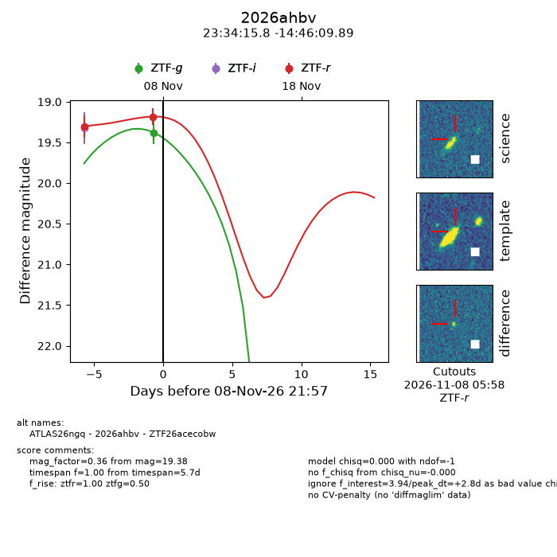
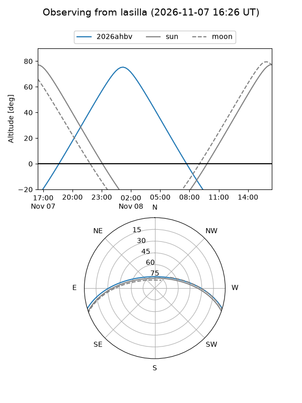
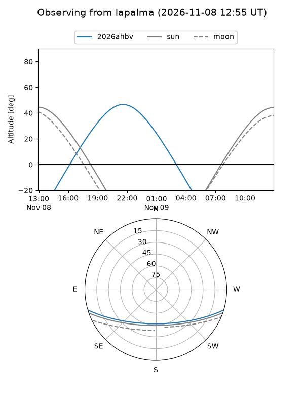
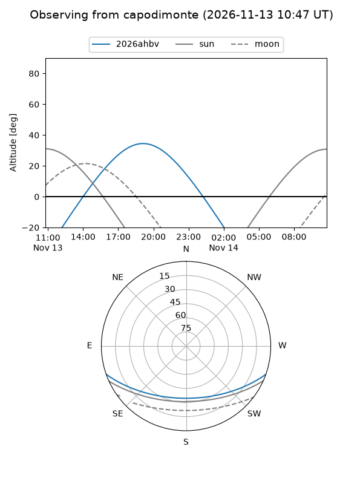
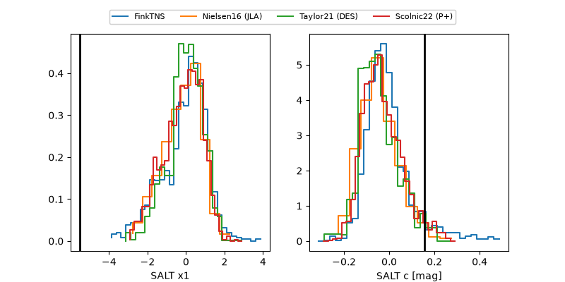

2026ahbv
Target 2026ahbv at 2026-11-08 21:59
Aliases and brokers:
FINK-ZTF: ztf.fink-portal.org/ZTF26acecobw
Lasair-ZTF: lasair-ztf.lsst.ac.uk/objects/ZTF26acecobw
ALeRCE-ZTF: alerce.online/object/ZTF26acecobw
YSE-PZ: ziggy.ucolick.org/yse/transient_detail/2026ahbv
TNS name: wis-tns.org/object/2026ahbv
Direct TNS query: direct search
alt names
ZTF26acecobw (ztf,fink_ztf)
2026ahbv (tns,yse)
ATLAS26ngq (atlas)
Coordinates:
equatorial (ra, dec) = 353.5659,-14.76941
equatorial (HMS+DMS) = 23:34:15.82,-14:46:09.89
galactic (l, b) = (63.5750,-68.20132)
Flags:
peak dt: +2.8
Photometry:
last ztfg=19.38, ztfr=19.18
1 ztfg, 2 ztfr detections
Lightcurve

Visibility



Additional plots
